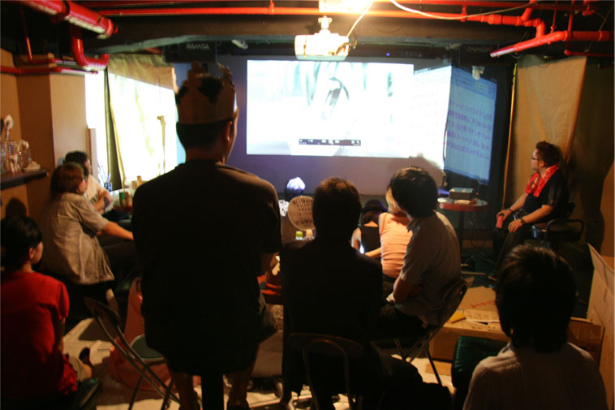

メイド喫茶に約10年通って 秋葉原のメイド喫茶をコンプリートしている「秋葉原の住人」たかとらさんと一緒に作品を作りました ユニット名を「うさぎ+天使計算」とした。 パフォーマンスは、たかとらさんが大好きな「萌え系アニメ」を編集したものを流し、たかとらさんと内田がそれを見て「見えたもの、思いついた単語」を発言していく。 その単語を、 たかとらさんの弟ナメックさんと、秋葉原での活動で最初に手伝ってくれることになった工藤杏里さんがタイピングしていく。それぞれの言葉はそれぞれのスクリーンに別々に映し出される。
出演：たかとら/ナメック/工藤杏里/内田聖良
photo by 宮崎楽市 鶴谷歩
©内田聖良 Seira Uchida ALL rights reserved.